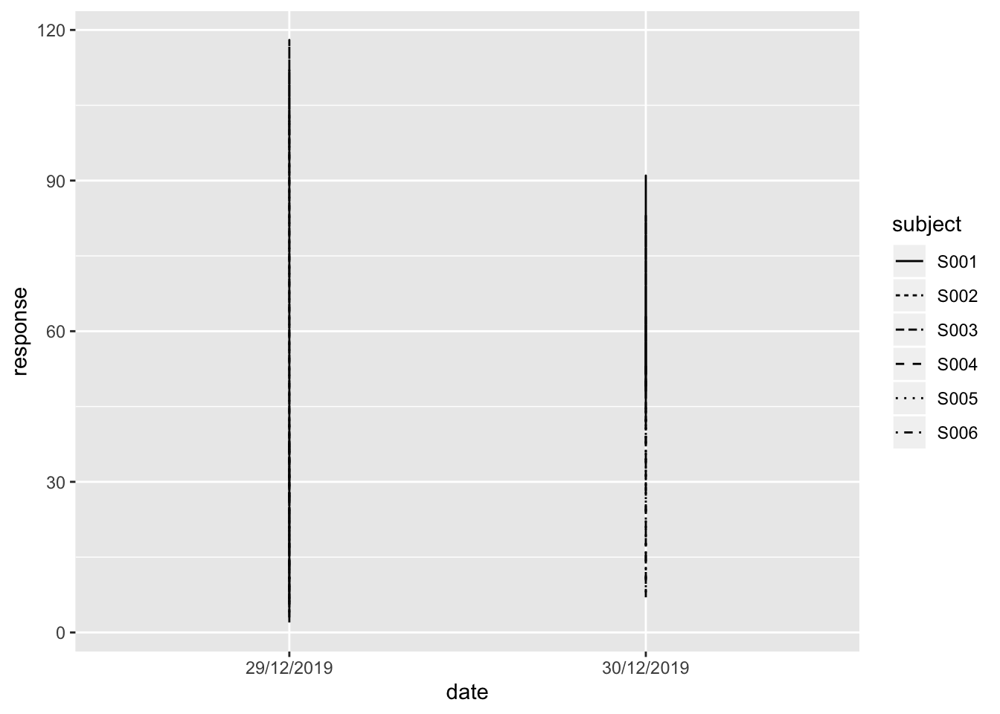
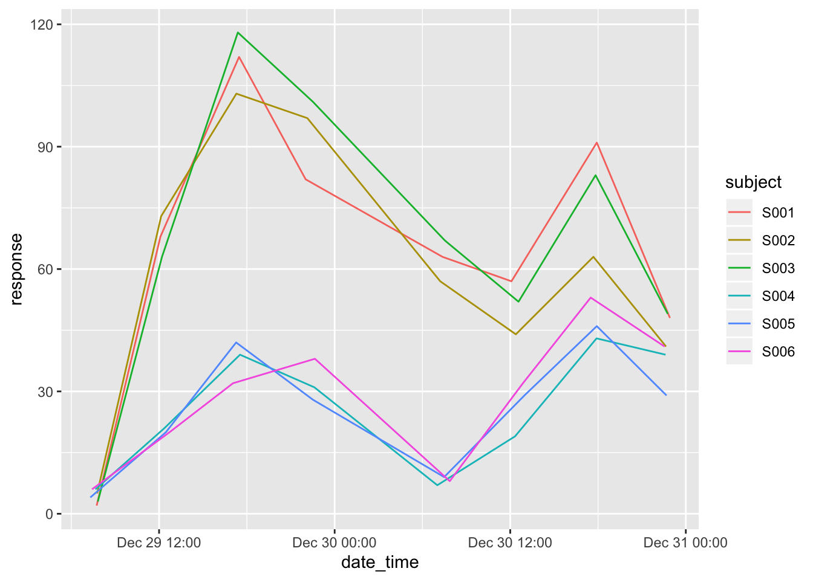

Chapter 5 Working with date-time data: lubridate
When working in a lab you will often encounter time-measured data. For instance, growth curves, animal behavior observations etc.
The tidyverse package lubridate can help you with that. It is quite an expensive package; only the bare essentials will be dealt with here. For a bit more complete overview have a look at the cheat sheet.
A small fictitious dataset will be used here to explore some of the concepts. It can be found in file data/time_series_drug_test.txt.
ts <- read.table("data/time_series_drug_test.txt",
header = T,
sep = ";",
as.is = 2:3)
ts <- as_tibble(ts)
ts## # A tibble: 48 x 5
## subject date time control response
## <fct> <chr> <chr> <fct> <int>
## 1 S001 29/12/2019 07:44 n 2
## 2 S001 29/12/2019 12:06 n 68
## 3 S001 29/12/2019 17:28 n 112
## 4 S001 29/12/2019 22:01 n 82
## 5 S001 30/12/2019 07:22 n 63
## 6 S001 30/12/2019 12:05 n 57
## 7 S001 30/12/2019 17:55 n 91
## 8 S001 30/12/2019 22:55 n 48
## 9 S002 29/12/2019 07:46 n 5
## 10 S002 29/12/2019 12:09 n 73
## # … with 38 more rowsIf you simply want to show the timeseries as a plot, the date and time columns need to be combined first. The tidyr package has unite(), or do it with mutate()
ts %>%
unite("date_time", date, time, sep = "T") %>%
head(3)## # A tibble: 3 x 4
## subject date_time control response
## <fct> <chr> <fct> <int>
## 1 S001 29/12/2019T07:44 n 2
## 2 S001 29/12/2019T12:06 n 68
## 3 S001 29/12/2019T17:28 n 112As you can see, the original data columns are lost in this operation. Using mutate() and paste() does keep them intact however. I will take this approach because I want the old columns for demonstration purposes.
ts <- ts %>%
mutate(date_time = paste(date, time, sep=" "))
head(ts, 3)## # A tibble: 3 x 6
## subject date time control response date_time
## <fct> <chr> <chr> <fct> <int> <chr>
## 1 S001 29/12/2019 07:44 n 2 29/12/2019 07:44
## 2 S001 29/12/2019 12:06 n 68 29/12/2019 12:06
## 3 S001 29/12/2019 17:28 n 112 29/12/2019 17:28Let’s reshuffle. I like it when my dependent variable comes last.
ts <- ts %>% select(subject, date, time, date_time, control, response)
head(ts, 3)## # A tibble: 3 x 6
## subject date time date_time control response
## <fct> <chr> <chr> <chr> <fct> <int>
## 1 S001 29/12/2019 07:44 29/12/2019 07:44 n 2
## 2 S001 29/12/2019 12:06 29/12/2019 12:06 n 68
## 3 S001 29/12/2019 17:28 29/12/2019 17:28 n 112If I attempt to plot the response over time for each of the subjects I get into trouble:
ggplot(data = ts,
mapping = aes(x = date, y = response, linetype = subject)) +
geom_line()
Also, when I would like to calculate something like the change per hour in response level over the different measurements this would be difficult indeed. Take a minute to think about this. Do you know any technique in base R that you’ve encountered so far that supports this?
Actually there are some functions in baser R that can do this, but we’ll stick to the tidyverse.
So this is the area of the lubridate package. I included a library(lubridate) statement at the top of this document so that’s not needed anymore.
Let’s start with reading in date and time variables. There are many dedicated (wrapper) functions for reading date and time data. The date variable has the format “Day/Month/Year” so the function dmy() should be fine here:
ts <- ts %>%
mutate(date = dmy(ts$date))
ts %>% head(3)## # A tibble: 3 x 6
## subject date time date_time control response
## <fct> <date> <chr> <chr> <fct> <int>
## 1 S001 2019-12-29 07:44 29/12/2019 07:44 n 2
## 2 S001 2019-12-29 12:06 29/12/2019 12:06 n 68
## 3 S001 2019-12-29 17:28 29/12/2019 17:28 n 112As you can see, the type has changed into date. Let’s try the plot again:
ggplot(data = ts,
mapping = aes(x = date, y = response, linetype = subject)) +
geom_line()
Now we’re getting somewhere. The times are not taken into account yet, so it is simply mapped to 00:00 hours on that day. Also, we’re not really interested in the specific date, we want to know the change from T = 0. We’ll get to that.
Parsing time is the same as parsing the date, we have an “Hour:Minute” format so the function to take is hm() (there is also an hms()):
hm(ts$time)[1:5]## [1] "7H 44M 0S" "12H 6M 0S" "17H 28M 0S" "22H 1M 0S" "7H 22M 0S"And yes, there is also an dmy_hm() function:
dmy_hm(ts$date_time)[1:5]## [1] "2019-12-29 07:44:00 UTC" "2019-12-29 12:06:00 UTC"
## [3] "2019-12-29 17:28:00 UTC" "2019-12-29 22:01:00 UTC"
## [5] "2019-12-30 07:22:00 UTC"As long as the format is not too esoteric, lubridate will figure out the separator quite well.
If you want full control -or simply want to remember only one or two functions- you could take either one of fast_strptime() or parse_date_time(). Both take a format string as argument: a string in which you specify the way your date-time character data are structured The most used symbols are these (although you should really also look at the help page):
borBAbbreviated or full month name in the current locale. The C parser currently understands only English month names.dDay of the month as decimal number (01–31 or 0–31)HHours as decimal number (00–24 or 0–24).IHours as decimal number (01–12 or 1–12).mMonth as decimal number (01–12 or 1–12).MMinute as decimal number (00–59 or 0–59).pAM/PM indicator in the locale. Normally used in conjunction with I and not with H.SSecond as decimal number (00–61 or 0–61).yYear without century (00–99 or 0–99). In parse_date_time() also matches year with century (Y format).YYear with century.
Function parse_date_time() is the most lenient of the two with respect to the format string:
parse_date_time(ts$date_time, "d.m-y H:M")[1:5] ##doesn't care I have a typo in my format string## [1] "2019-12-29 07:44:00 UTC" "2019-12-29 12:06:00 UTC"
## [3] "2019-12-29 17:28:00 UTC" "2019-12-29 22:01:00 UTC"
## [5] "2019-12-30 07:22:00 UTC"ts <- ts %>% mutate(date_time = parse_date_time(ts$date_time, "d/m/y H:M"))
head(ts, 3)## # A tibble: 3 x 6
## subject date time date_time control response
## <fct> <date> <chr> <dttm> <fct> <int>
## 1 S001 2019-12-29 07:44 2019-12-29 07:44:00 n 2
## 2 S001 2019-12-29 12:06 2019-12-29 12:06:00 n 68
## 3 S001 2019-12-29 17:28 2019-12-29 17:28:00 n 112The fast_strptime() is much more picky, but much faster. You specify the date(-time) format using% sign together with one of the symbols listed above:
fast_strptime('29/12/2019 07:44', '%d/%m/%Y %H:%M')## [1] "2019-12-29 07:44:00 UTC"## When in tibble context, you need to set `lt = F`...
ts %>%
mutate(date_time = fast_strptime(date_time, '%d/%m/%Y %H:%M', lt = F))I think sticking to the first will suffice.
5.1 Current time
The functions today() and now() are your friends.
##output will vary!
paste("the day is ", today())## [1] "the day is 2020-01-23"paste("and to be really exact: ", now())## [1] "and to be really exact: 2020-01-23 12:29:26"5.2 Getting elements from date-time objects
Once you have the date-time object processed, you can look at the individual elements.
There are -again- many functions related to this. Have a look at the cheat sheet for details. Here are the most-used components:
date(x)Date component leaving the time out.year(x)The year.month(x, label, abbr)The month. When called without other argument, you get the month number (e.g. 2). With thelabel = TRUEargument you will get text (e.g. Feb) andabbr = FALSEyou get the full name of the month (February).day(x)The day of the month.wday(x,label,abbr)The day of week. Label and abbr behaves the same as withmonth().hour(x)The hourminute(x)Minutes.second(x)Seconds.week(x)Week of the year.
A use case demonstration: On what days were the samples taken of the times series used so far?
ts %>%
group_by(day_of_week = wday(date_time, label=T)) %>%
summarize(sample_count = n())
# or, shorter
#ts %>% group_by(day_of_week = wday(date_time, label=T)) %>% tally()## # A tibble: 2 x 2
## day_of_week sample_count
## <ord> <int>
## 1 Sun 24
## 2 Mon 24What was the mean response on the different times of the day:
ts %>%
group_by(hour_of_day = hour(date_time)) %>%
summarize(mean = mean(response))## # A tibble: 4 x 2
## hour_of_day mean
## <int> <dbl>
## 1 7 19.8
## 2 12 41.5
## 3 17 68.8
## 4 22 52And when split over the control/treatment group as well:
ts %>%
group_by(control, hour_of_day = hour(date_time)) %>%
summarize(mean = median(response),
n = n())## # A tibble: 8 x 4
## # Groups: control [2]
## control hour_of_day mean n
## <fct> <int> <dbl> <int>
## 1 n 7 31 6
## 2 n 12 60 6
## 3 n 17 97 6
## 4 n 22 65.5 6
## 5 y 7 6.5 6
## 6 y 12 20.5 6
## 7 y 17 42.5 6
## 8 y 22 34.5 6Finally, let’s close off with a plot
ggplot(data = ts,
mapping = aes(x = date_time, y = response, color = subject)) +
geom_line()
As practice, you could try to generate a response plot like this where subjects 1 to 3 have corrected values based on the non-treated group.
5.3 Calculations with date-time
The example below shows the most basic calculation: the difference between two date-time objects.
ts %>%
group_by(subject) %>%
select(subject, date_time) %>%
mutate(lagged = lag(date_time),
diff = date_time - lagged) ## # A tibble: 48 x 4
## # Groups: subject [6]
## subject date_time lagged diff
## <fct> <dttm> <dttm> <drtn>
## 1 S001 2019-12-29 07:44:00 NA NA hours
## 2 S001 2019-12-29 12:06:00 2019-12-29 07:44:00 4.37 hours
## 3 S001 2019-12-29 17:28:00 2019-12-29 12:06:00 5.37 hours
## 4 S001 2019-12-29 22:01:00 2019-12-29 17:28:00 4.55 hours
## 5 S001 2019-12-30 07:22:00 2019-12-29 22:01:00 9.35 hours
## 6 S001 2019-12-30 12:05:00 2019-12-30 07:22:00 4.72 hours
## 7 S001 2019-12-30 17:55:00 2019-12-30 12:05:00 5.83 hours
## 8 S001 2019-12-30 22:55:00 2019-12-30 17:55:00 5.00 hours
## 9 S002 2019-12-29 07:46:00 NA NA hours
## 10 S002 2019-12-29 12:09:00 2019-12-29 07:46:00 4.38 hours
## # … with 38 more rowsYou can define periods, durations and work with time intervals. However, this is outside the scope of this course. For this more advanced time math you should refer to the cheat sheet or the offical docs.